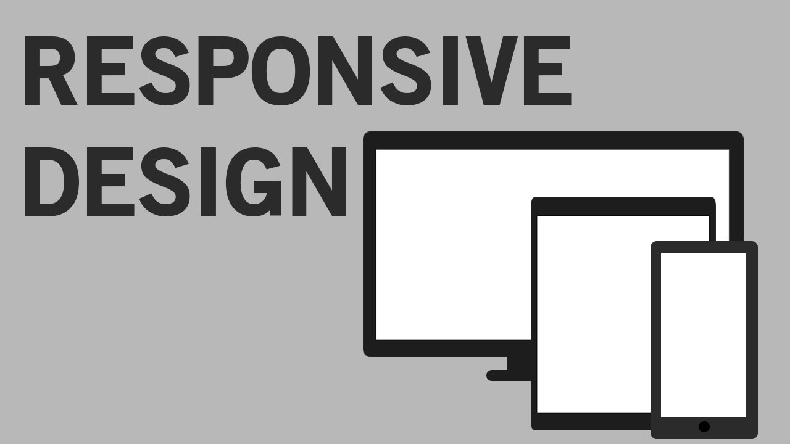
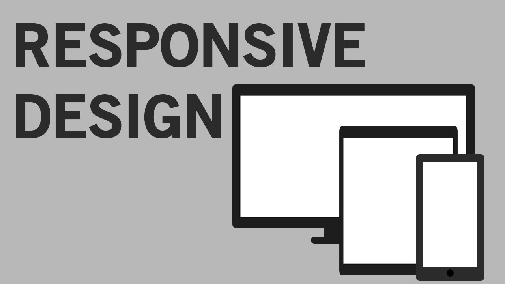

With the advent of mobile devices connecting the virtual world, the demand for responsive websites have changed the way websites are designed and maintained. I have enrolled in the MEAN stack development course, which includes JavaScript, NodeJs, AngularJs, MongoDB, ExpressJS. In the next level of the course, I will be learning about BootStrap. I had programming experience in C and Java. Presently, I am exploring the dynamics of front-end development with the help of HTML5 and CSS3. Other than that, in future, I am looking forward to try my hands on Python. I have heard good things about it, it seems intriguing.


 
